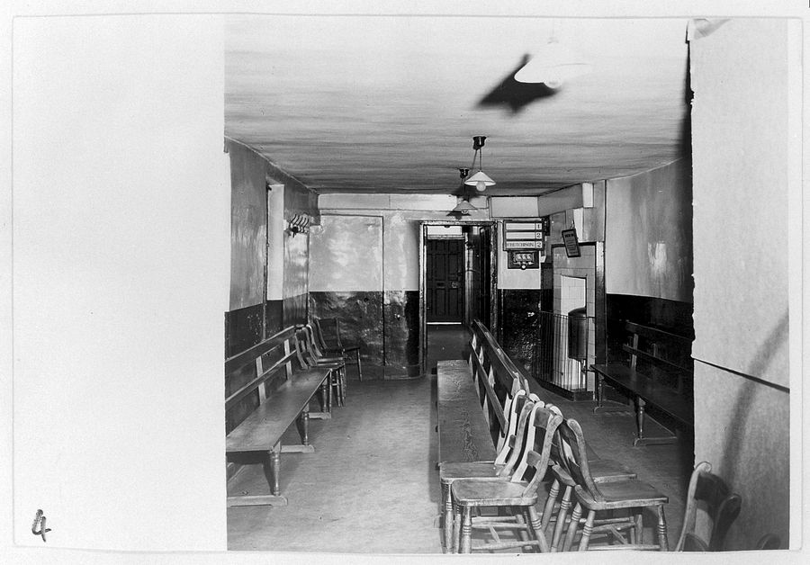

広告について当サイトは広告を掲載していません。 掲載することになったときは、その記事の冒頭と広告の枠に「広告を含みます」と明記します。
からだの
原文
KARADA NO GENBUN 2026
体づくりと美容について語られている数字とことばを、 法令と公的資料の原文までさかのぼって、出どころつきで写しておく場所です。 書いているのは、これからはじめる人です。試したことは書きません。
わたしはまだ、なにも試していません
書いている人は、体づくりも美容もこれからはじめる側です。 資格も実務経験もありません。できるのは、原文を開いて、そのまま写すことだけです。
John Phelan ／ CC BY 4.0（出どころ一覧）
なぜ、写すだけにしているのか
体づくりと美容の話には、かならず数字がついてきます。何パーセント、何日、何項目。 どれももっともらしく見えますが、その数字がどこに書いてあるのかは、たいてい示されていません。
このサイトは、そこだけを引き受けます。出てきた数字とことばを、 法令・府令・告示・通知・業界の自主基準まで戻して、条や項の番号つきで写しておく場所です。
書いている人は、体づくりも美容もこれからはじめる側です。 資格も実務経験もありません。だから、やってみた話は一行も書けませんし、書きません。
代わりにできるのは、原文を開いて、そのまま写すことです。 書き写した日付も、そのつど残してあります。原文が変われば、ここも変わります。
Fanny (Appleton) Longfellow (1817-1861) ／ Public domain（出どころ一覧） 1841年の私信。原文を写すという仕事の形は、昔から変わっていません。
このサイトが守っていること
このサイトでいちばんよく出てくる数字
どれも、どこかの誰かが言った数字ではありません。法令・府令・通知・業界の自主基準に、 そのまま書かれている数字です。
横軸はBMI。目盛りは2.0ごとで、どの区間も同じ幅です（全体の幅÷12）。 出典：日本人の食事摂取基準（2025年版）策定検討会報告書 表1。 原資料には「あくまでも参考として使用すべきである」という注が付いています。 また65歳以上の下限について、総死亡率をできるだけ低く抑えるには20.0から21.0付近となるが、 その他の考慮すべき健康障害等を勘案して21.5とした、と書かれています。
数字と、その置き場所
出どころ 薬食発0721第1号 別表第一
出どころ 身体活動・運動ガイド2023
出どころ 食品表示基準 別表第十一
出どころ 特定商取引法 第48条第1項
記事は8本あります
ことばの線引き、表示の読み方、食べものの制度、からだを動かす目安、契約のきまり。 どの記事も、もとになった資料の名前を先に置いてあります。
 02 ／ ことばの線引き
化粧品が書いてよい効能は、番号つきで56個決まっている
化粧品の広告に書いてよい効能は、厚生労働省の通知が番号つきの一覧で示しています。2011年に1項目が加わって、いまは56項目です。一覧の外にあることは、書けません。
出どころ 薬食発0721第1号（平成23年7月21日）
03
表示を読む
全成分表示は、配合量の多い順に並んでいる
化粧品の容器に並ぶ成分名には、並べ方の決まりがあります。多い順に書くこと、ただし1％以下の成分と着色剤は順不同でよいこと。
出どころ 医薬監麻発第220号（平成13年3月6日）
04 ／ 表示を読む
SPFとPAは、それぞれ別の波長を測った数字
日やけ止めに並ぶ二つの数字は、業界の自主基準で決まっています。SPFは50を超えると「50+」に丸められ、PAは測った値を四つの段に当てはめて「＋」の数にします。
出どころ 日本化粧品工業連合会 自主基準（2011／2012年改定版）
05
食べものの制度
保健機能食品は三つあって、国の関わり方が違う
トクホ、機能性表示食品、栄養機能食品。この三つは並んで売られていますが、国が許可するもの、届け出るだけのもの、基準に当てはめるだけのものと、関わり方がまったく違います。
出どころ 食品表示基準（平成27年内閣府令第10号）
02 ／ ことばの線引き
化粧品が書いてよい効能は、番号つきで56個決まっている
化粧品の広告に書いてよい効能は、厚生労働省の通知が番号つきの一覧で示しています。2011年に1項目が加わって、いまは56項目です。一覧の外にあることは、書けません。
出どころ 薬食発0721第1号（平成23年7月21日）
03
表示を読む
全成分表示は、配合量の多い順に並んでいる
化粧品の容器に並ぶ成分名には、並べ方の決まりがあります。多い順に書くこと、ただし1％以下の成分と着色剤は順不同でよいこと。
出どころ 医薬監麻発第220号（平成13年3月6日）
04 ／ 表示を読む
SPFとPAは、それぞれ別の波長を測った数字
日やけ止めに並ぶ二つの数字は、業界の自主基準で決まっています。SPFは50を超えると「50+」に丸められ、PAは測った値を四つの段に当てはめて「＋」の数にします。
出どころ 日本化粧品工業連合会 自主基準（2011／2012年改定版）
05
食べものの制度
保健機能食品は三つあって、国の関わり方が違う
トクホ、機能性表示食品、栄養機能食品。この三つは並んで売られていますが、国が許可するもの、届け出るだけのもの、基準に当てはめるだけのものと、関わり方がまったく違います。
出どころ 食品表示基準（平成27年内閣府令第10号）
 06 ／ 食べものの制度
栄養成分表示は五つが義務で、並ぶ順番も決まっている
加工食品の裏に必ずある小さな表には、書く項目も順番も決まりがあります。さらに、表示された値にどれだけの幅が許されているかまで、府令の別表が定めています。
出どころ 食品表示基準 別記様式二・別表第九
07
からだを動かす
国が出している運動の目安は、歩数と時間と頻度で書かれている
厚生労働省の検討会が2024年1月にまとめたガイドは、成人・こども・高齢者に分けて数字を示しています。成人は1日約8,000歩、筋力トレーニングは週2〜3日。
出どころ 健康づくりのための身体活動・運動ガイド2023
06 ／ 食べものの制度
栄養成分表示は五つが義務で、並ぶ順番も決まっている
加工食品の裏に必ずある小さな表には、書く項目も順番も決まりがあります。さらに、表示された値にどれだけの幅が許されているかまで、府令の別表が定めています。
出どころ 食品表示基準 別記様式二・別表第九
07
からだを動かす
国が出している運動の目安は、歩数と時間と頻度で書かれている
厚生労働省の検討会が2024年1月にまとめたガイドは、成人・こども・高齢者に分けて数字を示しています。成人は1日約8,000歩、筋力トレーニングは週2〜3日。
出どころ 健康づくりのための身体活動・運動ガイド2023

08 ／ 契約のきまり エステと美容医療の契約には、法律で決まった八日間がある 一定の期間と金額を超える契約は、特定継続的役務提供として特定商取引法の対象になります。書面を受け取った日から八日間は、理由を問わず解除できます。 出どころ 特定商取引に関する法律 第41条・第48条・第49条扱わないと決めたこと
このサイトは、症状の見立て、治療の選び方、商品の比べ方を扱いません。 どれも、原文を写すだけでは足りない領域だからです。
個別の体調や体質にかかわることは、医師・薬剤師・管理栄養士など、 その資格を持つ人に相談してください。契約でもめたときの相談先も、公的な窓口があります。
- 窓口消費者庁「消費者ホットライン188（いやや！）」
https://www.caa.go.jp/policies/policy/local_cooperation/local_consumer_administration/hotline/
書き写した日の記録
- サイトを開設。記事8本を公開。 すべての記事について、この日に原文を開いて数字を確かめた。
- 食事摂取基準は2025年版、 身体活動のガイドは2023（令和6年1月とりまとめ）を参照していることを明記した。
- 写真の出どころと利用条件を、 出どころ一覧のページにまとめた。